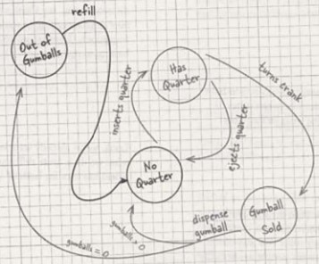
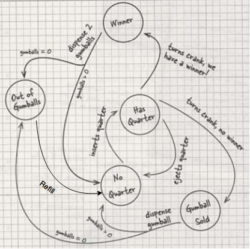
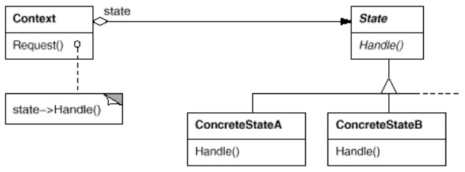

Exemple
Cet exemple vient de Design Patterns Head First (p 386 du livre).Scénario : on doit informatiser le fonctionnement d'un distributeur de chewing-gum.
On nous fournit le schéma suivant :

Ce diagramme montre différents états ainsi que des transitions entre ces états.
Vocabulaire :
Quarter = pièce de 25 cents (1/4 de dollar)
Crank = manivelle
Gumball = boule de gomme
Quarter = pièce de 25 cents (1/4 de dollar)
Crank = manivelle
Gumball = boule de gomme
On doit aussi gérer les cas de comportements incohérents (par ex l'utilisateur tourne la manivelle alors qu'il n'y a pas de pièce dans la machine).
Le client nous informe que des évolutions seront sans doute demandées par la suite.
Résolution sans utiliser de pattern
(code dans exemples/patterns/state/headfirst/1-base/)On peut très bien répondre à cette demande sans utiliser de pattern :
- Une classe représente le distributeur.
- Le distributeur a une variable d'instance qui indique le nombre de gommes restantes.
- Les différents états possibles sont représentés par des constantes.
- L'état courant est exprimé par une variable d'instance.
- Les transitions entre états sont implémentés par des méthodes.
public class GumballMachine {
// Les différents états possibles
final static int SOLD_OUT = 0;
final static int NO_QUARTER = 1;
final static int HAS_QUARTER = 2;
final static int SOLD = 3;
int state = SOLD_OUT; // l'état courant
int count = 0; // le nombre de gommes restant
public GumballMachine(int count) {
this.count = count;
if (count > 0) {
state = NO_QUARTER;
}
}
public void insertQuarter() {
if (state == HAS_QUARTER) {
System.out.println("You can't insert another quarter");
} else if (state == NO_QUARTER) {
state = HAS_QUARTER;
System.out.println("You inserted a quarter");
} else if (state == SOLD_OUT) {
System.out.println("You can't insert a quarter, the machine is sold out");
} else if (state == SOLD) {
System.out.println("Please wait, we're already giving you a gumball");
}
}
// etc. code similaire pour les autres transistions
}
Cette implémentation fonctionne très bien, on peut la faire fonctionner, voir la classe Main.
public class Main {
public static void main(String[] args) {
GumballMachine gumballMachine = new GumballMachine(5);
System.out.println(gumballMachine);
gumballMachine.insertQuarter();
gumballMachine.turnCrank();
System.out.println(gumballMachine);
gumballMachine.insertQuarter();
gumballMachine.ejectQuarter();
gumballMachine.turnCrank();
System.out.println(gumballMachine);
gumballMachine.insertQuarter();
gumballMachine.turnCrank();
gumballMachine.insertQuarter();
gumballMachine.turnCrank();
gumballMachine.ejectQuarter();
System.out.println(gumballMachine);
gumballMachine.insertQuarter();
gumballMachine.insertQuarter();
gumballMachine.turnCrank();
gumballMachine.insertQuarter();
gumballMachine.turnCrank();
gumballMachine.insertQuarter();
gumballMachine.turnCrank();
System.out.println(gumballMachine);
}
Demande de modification
La demande est de faire évoluer la machine pour qu'il y ait un gagnant une fois sur 10 ; dans ce cas, la machine doit distribuer une gomme gratuite.Le diagramme évolue de la manière suivante : 
Pour répondre à la demande, il y a plusieurs modifications à apporter au code :
- Introduire un nouvel état,
WINNER. - Introduire une nouvelle variable d'instance qui varie de 0 à 9,
winnerCount, pour détecter un gagnant. -
Modifier chacune des fonctions qui expriment les transitions.
Pour chacune de ces méthodes, il faut ajouter un nouveau test.
On doit faire particulièrement attention àturnCrank():
Il faudra introduire un test surwinnerCountà l'intérieur du test} else if (state == HAS_QUARTER) { System.out.println("You turned..."); state = SOLD; dispense(); }pour savoir si on envoie vers l'étatSOLDouWINNER.
- On voit qu'à chaque demande de modification, on va devoir modifier le code existant en le complexifiant.
- On voit aussi que le code ne respecte pas plusieurs principes (voir page SOLID) :
- Single Responsability principle
- Encapsulate what varies
- Open-closed principle
Refactoring
Le pattern State permet de répondre à la demande d'évolution en évitant ces inconvénients :- Isoler le comportement de chaque état, de manière à pouvoir les modifier sans risque d'affecter le comportement des autres états.
- Avoir une classe par état, et le distributeur pourrait déléguer la gestion des transitions à ces classes.
Dans cette nouvelle organisation, ajouter un état reviendra à créer une nouvelle classe et modifier les transitions dans certaines classes d'états existant.
La refactorisation va impliquer :
- Définir une interface
Statecontenant une méthode pour chaque action du distributeur. - Implémenter une classe par état possible de la machine.
- Remplacer les
ifpar une délégation aux sous-classes deState.
public interface State {
public void insertQuarter();
public void ejectQuarter();
public void turnCrank();
public void dispense();
public void refill();
}
Dans GumballMachine, la délégation a remplacé le code conditionnel.
Les constantes exprimant les états sont replacés par des objets de classes implémentant
State.
La variable
state contient maintenant un objet.
public class GumballMachine {
State soldOutState;
State noQuarterState;
State hasQuarterState;
State soldState;
State state;
int count = 0;
public GumballMachine(int numberGumballs) {
soldOutState = new SoldOutState(this);
noQuarterState = new NoQuarterState(this);
hasQuarterState = new HasQuarterState(this);
soldState = new SoldState(this);
this.count = numberGumballs;
if (numberGumballs > 0) {
state = noQuarterState;
} else {
state = soldOutState;
}
}
public void insertQuarter() {
state.insertQuarter();
}
// ...
void setState(State state) { this.state = state; }
public State getState() { return state; }
public State getSoldOutState() { return soldOutState; }
// ...
}
Dans les classes d'états concrets, le code de chaque méthode est simple :
public class HasQuarterState implements State {
GumballMachine gumballMachine;
public HasQuarterState(GumballMachine gumballMachine) {
this.gumballMachine = gumballMachine;
}
public void insertQuarter() {
System.out.println("You can't insert another quarter");
}
public void ejectQuarter() {
System.out.println("Quarter returned");
gumballMachine.setState(gumballMachine.getNoQuarterState());
}
// ...
}
On voit que les transitions se font à l'intérieur des classes concrètes, par ex HasQuarterState passe à NoQuarterState dans ejectQuarter().
A noter :
-
chaque état contient une référence vers
GunballMachine, ce qui lui pemet de connaître l'état du système, et donc de savoir quoi faire (action et / ou passage à un autre état).
State, donc une même transition se comporte différemment d'un état à l'autre.
Exercice :
Faire le diagramme de séquence traduisant ces actions : on est dans l'état
Faire le diagramme de séquence traduisant ces actions : on est dans l'état
NoQuarterState, on insère une pièce et on tourne la manivelle.
Implémentation de la modification
On peut maintenant impléménter la demande de modification en rajoutant une classeWinnerState.
Exercice :
En partant de l'implémentation de exemples/patterns/state/headfirst/2-refactored/, implémenter la demande de modification.
Vous pouvez utiliser ces instructions pour gérer le fait qu'on peut gagner une fois sur 10 :
En partant de l'implémentation de exemples/patterns/state/headfirst/2-refactored/, implémenter la demande de modification.
Vous pouvez utiliser ces instructions pour gérer le fait qu'on peut gagner une fois sur 10 :
Random randomWinner = new Random(System.currentTimeMillis()); int winner = randomWinner.nextInt(10);
Structure
Remarques
On utilise la composition pour associer un état au contexte, ce qui permet au contexte de changer dynamiquement d'état.Le diagramme de classe est exactement le même que celui des patterns Strategy et Command, mais l'intention et le fonctionnement sont bien différents.
Dans le pattern State, différents états ont été encapsulés dans des objets, et l'état courant change en fonction du temps.
Le client n'a pas besoin de connaître ces états.
Exercice : Poste de radio